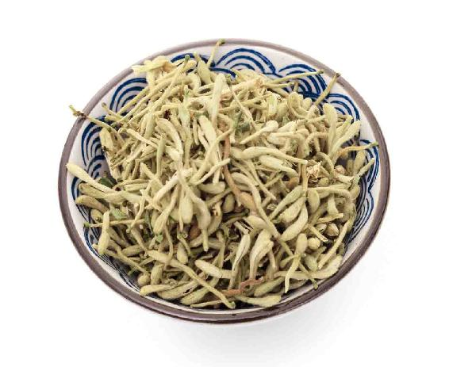

每年的5月20日、21日或22日，当太阳到达黄经60°时，就是交小满节气的时间。
小满这个名字非常有意思，古人是这么解释小满的得名—— “小满者，物至于此，小得盈满”。意思就是，万物生长到现在，正好是小得盈满了，开始满，但又没完全成熟。对于农家来说，这就表示夏熟作物的籽实要开始灌浆了，比如，麦子开始灌浆了，但又没有完全熟，还没大满，所以称它为小满。
以前在民间，这时候还会讲究把还没有完全熟的麦粒摘一些下来，做成麦蚕来食用，味道是很好的。
小满时节，我们可以尽情地享受所有植物那小得盈满的状态，对身体是非常好的。

其实，不仅是农作物，其他春天萌发的植物，在这时候也都小满了，它们都积聚了很丰富的营养。正因为如此，从上古的时候就有规定，药工要应时采收各种草药，因为很多中草药，特别是用叶子、花或者种子入药的中草药，在小满节气时，药性最好。从这时候开始，直到端午节前后，都是采药的最好时机。
在城市居住的朋友，在小满节气这段时间有没有机会采药呢？也是有的。比如，很多人家里都会种的金银花，这段时间就可以采摘头茬花了。
像我家种的金银花，我会在天刚亮，露水初干之际，选择那些没有开放的青色花蕾，这种花蕾的药效好，轻轻把它们摘下来。然后我会煮一壶甘草水，用来冲泡摘下来的鲜花，就是一杯金银花茶。泡过的花也有用，当成凉菜来吃，花蕾浸透了甘草的甜味，吃起来嫩嫩的，很清爽。剩下的大部分金银花，我会把它放在阳台上通风的地方。
请注意，金银花不要在强烈的阳光下暴晒，否则会失去香味。
金银花从夏到秋会开好几茬，小满前开的金银花是头茬花。经过前面秋冬春三季的营养积蓄，这一茬花的药性是最好的。所以我们在小满节气采摘的金银花很珍贵，要尽量把它多留一些，到盛夏的时候再来喝它。
盛夏时，我们很容易心火旺，那时候暑热也很伤人，正好用金银花泡水来清心解暑，还能调理夏季常见的皮肤问题。金银花除了夏天用来保健，平时家里备一点也是很好的。它既是茶饮，又是一味常用中药，能提高人体免疫力，消炎抗肿、清热解毒，还能用于血管病，临床应用非常广泛。
我常建议朋友们在家里养金银花。自己摘的花，喝得放心，还有满园清香。
金银花的学名是忍冬，它不怕冬天，很耐寒，而且它也不怕热。它特别好扦插（截取植物的根或枝插入土壤中，使长出新的植株），您只要截取一根枝条插在土里，它就能长根，就能生长。我家的金银花就是这样扦插出来的。
我家这两株金银花现在已经有十多年了，除了浇水也不用怎么照顾。每年小满时节，它们就为我送来满园清香。花开得特别繁盛，真是摘之不尽。
您不妨也在自己家里扦插一枝，插花盆里就可以，再插一根竹竿，或者牵一根绳子，它很快就能攀缘，爬满墙篱或阳台栏杆。
金银花不仅是金银双花并蒂而开，它的藤蔓也是互相缠绕着生长的，所以古人视为有情人的象征，叫它“鸳鸯藤”。金银花藤也入药，以前我在书里写过，用来煮水泡澡可以调理幼儿湿疹。
“涧上皆忍冬花，藤蔓纠结，黄白相间，其香纷郁，爽人心脾。花多落于溪中，故其泉甘冽异常。”
——清代王韬《淞隐漫录》
此景是不是很令人向往呢？如果我们在家里种一株，那么到小满时节，也可以坐在金银花藤架下，泡一壶金银花茶，享受它爽人心脾的清香、甘冽异常的清味了。
读者评论：用金银花藤煮水泡澡，这几年小孙子都没长过痱子
小嫆：金银花的功效太强大了。我家小宝眼皮中间有点红肿，用一次性洗脸巾蘸金银花水给他敷，反复了十多次，慢慢就开始消肿了。
荷叶青青：每年我都会在端午节那天，用金银花藤煮水给小孙子泡澡，这几年他都没有长过痱子。
倪广轩：陈老师，我买的金银花今年开花了，阴干特别香，每天早上采完玫瑰花采金银花。
缙_u：特别喜欢，小得盈满，慢慢品味。
允斌解惑：金银花蕾适合晒干品，新鲜的金银花可以泡水喝
一草一木：陈老师，为什么我买的金银花用凉开水冲泡后，变成了黑褐色？
允斌：金银花泡水后自然氧化颜色都会变深的，纯绿条的金银花变色最明显，只有熏过硫黄的金银花颜色才浅。
一丹：金银花的花蕾比花朵的药效好吗？新鲜的金银花可以直接泡水喝吗？
允斌：花蕾的药效更好。新鲜的金银花可以泡水喝。
lucky ：脸上起了痱子，可以用金银花煮水洗脸吗？
允斌：可以的。
小满节气的这十五天，天地间充溢着旺盛的阳气，但阳气还没到达顶点（夏至的时候，阳气才会到达顶点，但一旦到了夏至，阳气就会由盛转衰了），还在往上生长，是刚刚好的。
之前，我们通过在春天对脾的滋养，立夏时对肾气的固护，身体储备起了足够的能量，达到了小得盈满的状态，这时候正好是快速生长的阶段。小满期间，我们要趁机为身体的生长加把力。
小满期间的生长并不是长赘肉，而是长筋骨、长肌肤、长精力。
这种长法不仅不会让我们发胖，反而会让我们的身体变得更苗条、更结实、更有活力。
为了能在夏天长得更好，在小满期间，我们要先给身体减减负、排排毒。
减什么呢？减一减体内多余的脂肪，排出蓄积的毒素。
这时候的小满，是要让身体的能量小满，肾气小满，多余的脂肪、毒素等新陈代谢的废物要排出去，这样才能让身体继续达到一个盈满的状态。
这时候，讲究要吃一点梅子，可以做成冰梅酱来吃，也可以把去年腌制的酒梅干拿出来吃。
这时候的梅子刚上市，做成冰梅酱是最为味美的。而且，梅子也正是医家要采的中草药之一，它既是食物，也是中药，对于让我们的身体保持一种恰当的小满状态，是很有帮助的。
细心的朋友会发现，二十四节气里只有小满却没有大满，这是为什么呢？
其实，在我看来，这恰好体现了中国传统文化的一个理念。因为大满并不是古人追求的一个完美境界。
古人认为，一切事物到了极致，就必然要走下坡路。古人说：“月满则亏，水满则溢。”月圆了以后，就要开始变成残月，而杯中的水满了以后，它就会溢出，所以一切东西，都不要去追求到尽，追求到尽的话，就会有损伤。
平时吃药也是这样的道理，千万不要追求一定要把病完全治好的药量，这样对身体反而有损伤，因为可能会用药过度。
古人用药治病，讲究治到六七分程度就可以了，剩下的三四分怎么办呢？通过饮食来调理。让它慢慢地恢复健康，这才是让身体长期健康的一个有益方法。
大满、极致，这些都不是古人追求的境界。
古人认为，一切的东西都是小得盈满，将熟未熟，将满未满，这才是一个好的状态，因为这还有向上的空间，还可以继续生长，这是符合中国人的哲学思想的。
读者评论：治病治个六七分好，原来也是一种小满
在水一方_fm：感谢老师教给我们这么多实用又实惠的养生方法。上次去治颈椎病时医生说，只能治个六七分好，原来也是一种小满。
richcat_V：现在收听陈老师的课程已经是我生活中重要的事情了。按照老师的方法来养生，让生活更美好！
溶月荷风：陈老师好，每天有您的声音陪伴，真好！马上迎来小满，有着旺盛的生命力，快速生长，长筋骨，长肌肤！
熊猫_kx：陈老师分享的不只有食疗方子，还有我们先祖的哲学思想，受益颇多！